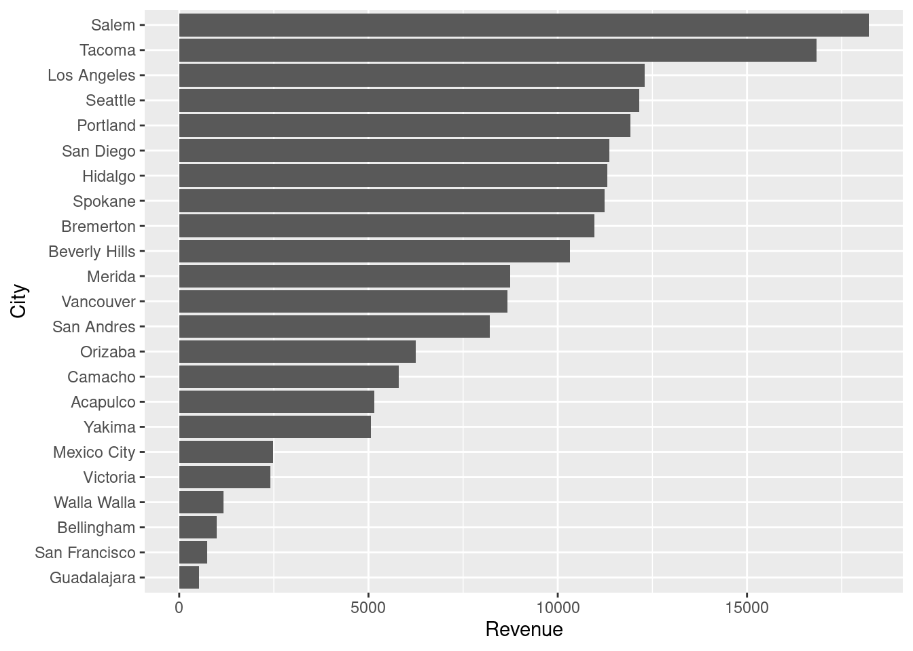
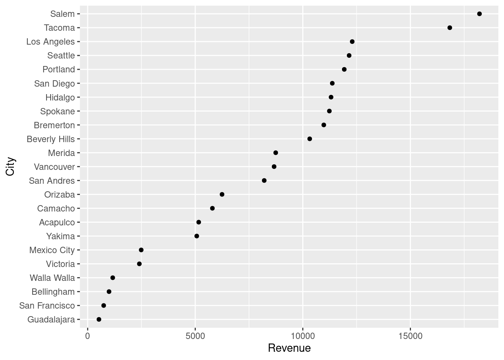
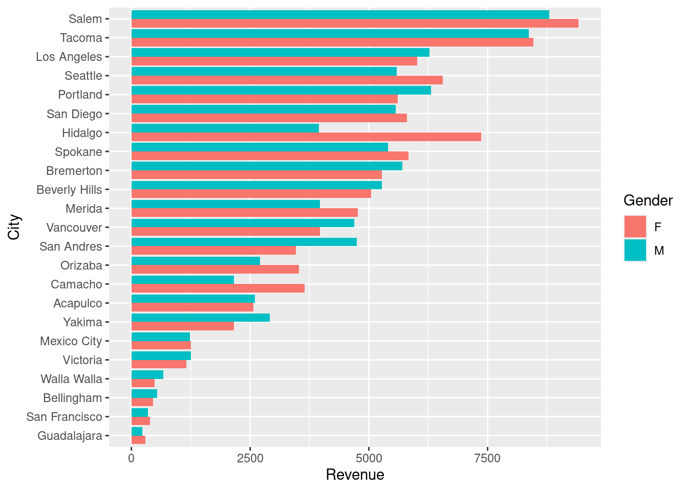
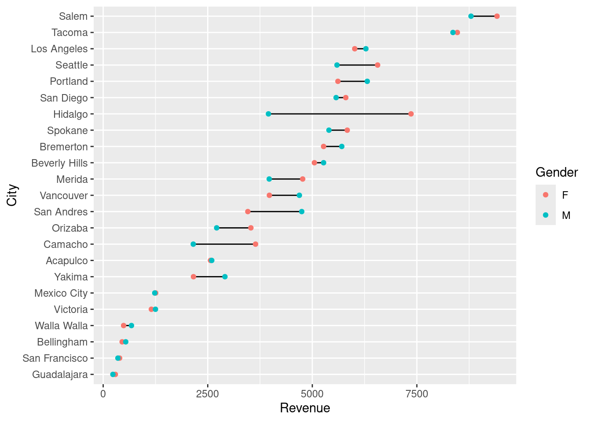
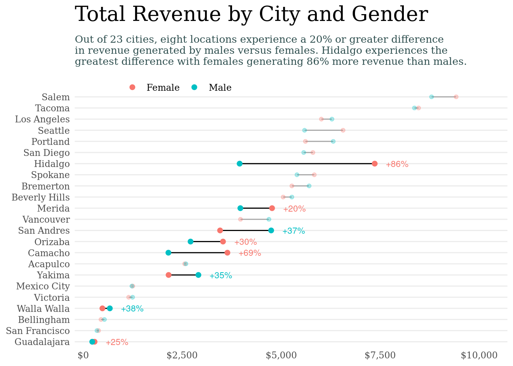
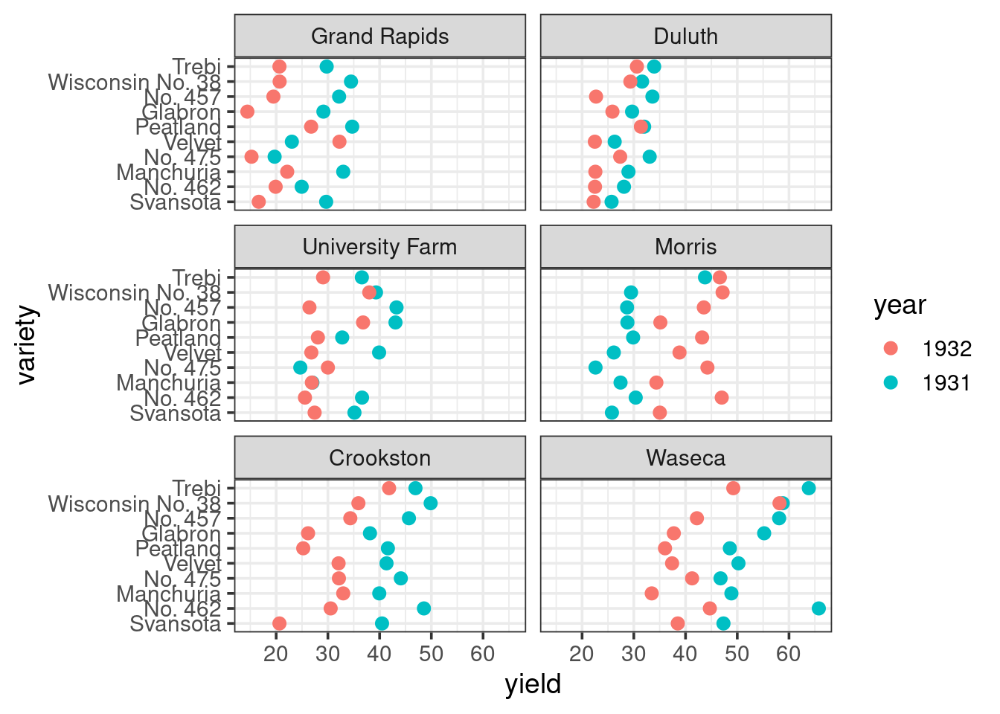
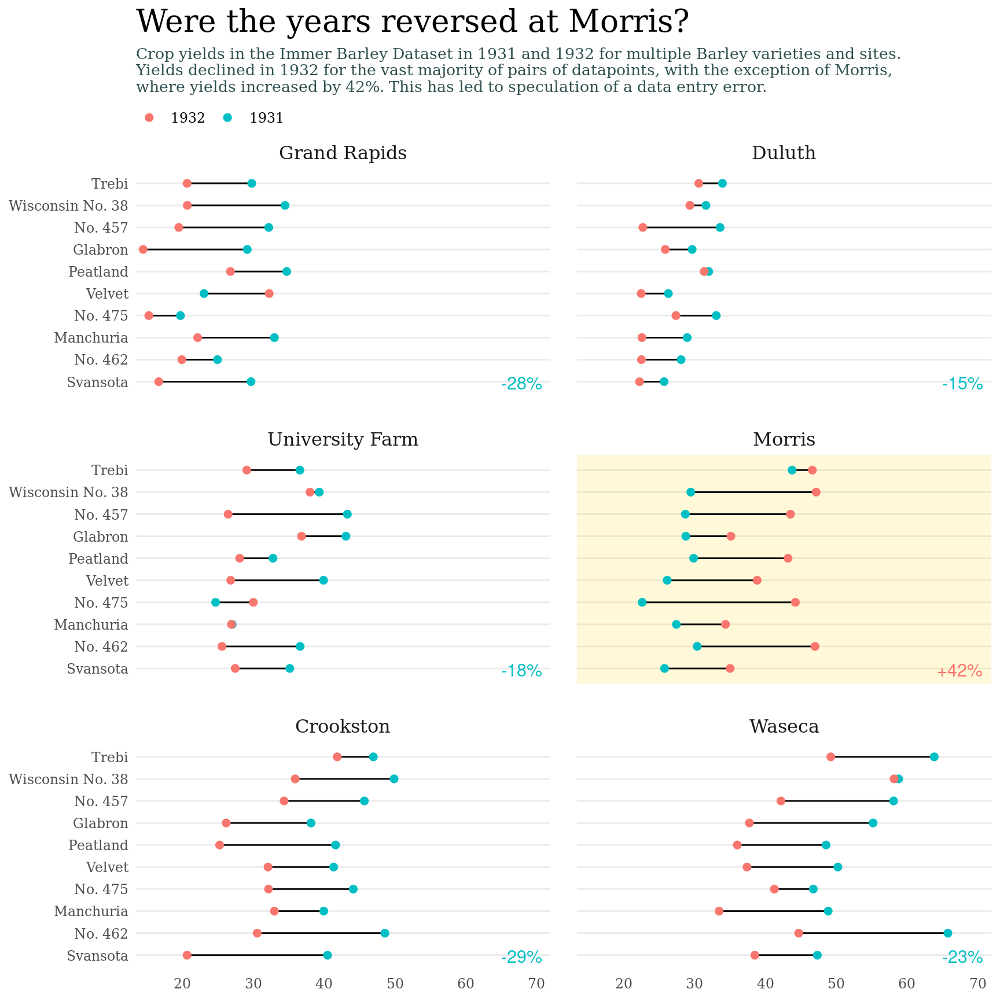

library(tidyverse)
library(readxl)
library(nycflights13)
library(ggthemes)
library(lattice)
library(scales)Meetup 2 Vignette (R)
Overview
In this markdown page we are going to go through some basic code examples of the types of visualizations that we are interested in. Some of this material is covered in more depth on the UCR Business Analtyics Dot Plot Page
Supermarket Revenue Data
We begin by visualizing a (fictional) dataset on supermarket chain revenue across different cities and by customers of different genders. This is a combination of a numerical variable (revenue) and up to two categorical variables (city and gender). We will want to show the cities ordered by revenue and also the differences between revenue generated by male and female customers.
supermarket <- read_excel("data/supermarket.xlsx", sheet = "Data")
city_rev <- supermarket |>
group_by(City) |>
summarise(Revenue = sum(Revenue, na.rm = TRUE)) |>
mutate(City = fct_reorder(City, Revenue))A standard way to plot this type of data is with a bar plot. Ordering the cities by revenue makes the plot more legible. Because this is a bar plot, it is necessary to start the ‘x-axis’ at 0 (we will call this the principle of proportional ink). Bar plots can represent several different perceptual tasks, including position on a common axis, length, and area.
ggplot(city_rev, aes(City, Revenue)) +
geom_bar(stat = "identity") +
coord_flip()
A Cleveland Dot-Plot has some advantages over a bar plot because it isolates the “comparison along a common axis” perceptual task and also enables some powerful secondary visualizations that can add a second category or additional comparison. In ggplot you can accomplish this using ‘geom_point’.
ggplot(city_rev, aes(Revenue, City)) +
geom_point()
Adding a second categorical variable
Now let us add another categorical variable to our visualization, gender. Side-by-side bar chats are commonly employed to show this type of visualization. In this visualization, there is a large ratio of ink to data, and the viewer of the figure must mentally calculate the difference in height of the adjacent bars and then compare that mentally calculate difference across cities. This is a very complex and challenging perceptual task.
city_gender_rev <- supermarket |>
group_by(City, Gender) |>
summarise(Revenue = sum(Revenue, na.rm = TRUE)) |>
ungroup() |>
mutate(City = factor(City, levels = levels(city_rev$City)))`summarise()` has regrouped the output.
ℹ Summaries were computed grouped by City and Gender.
ℹ Output is grouped by City.
ℹ Use `summarise(.groups = "drop_last")` to silence this message.
ℹ Use `summarise(.by = c(City, Gender))` for per-operation grouping
(`?dplyr::dplyr_by`) instead.ggplot(city_gender_rev, aes(City, Revenue, fill = Gender)) +
geom_bar(stat = "identity", position = "dodge") +
coord_flip()
The dotplot provides an alternative means of showing the difference in revenue between male and female customers that is much more parsimonious. The male and female data points can both be plotted on the same axis, at the level corresponding to the city. A line can be drawn between each pair of data points, indicating the size of the difference. This makes it unnecessary for the viewer to mentally construct the difference.
ggplot(city_gender_rev, aes(Revenue, City)) +
geom_line(aes(group = City)) +
geom_point(aes(color = Gender))
Finally, this simple figure looks good, but for it to be at a professional, presentation level it needs a little bit more effort. A title and subtitle could provide some context to incorporate the figure into a narrative and to give it greater purpose. The actual revenue numbers could be drawn on the plot, or the Male and Female gender markers could also be drawn directly on the plot, obviating the need for the eye to constantly look at the legend.
Below is a version that uses a much cleaner theme and highlights cities with a large gender difference in revenue:
right_label <- city_gender_rev |>
group_by(City) |>
arrange(desc(Revenue)) |>
top_n(1)Selecting by Revenueleft_label <- city_gender_rev |>
group_by(City) |>
arrange(desc(Revenue)) |>
slice(2)
big_diff <- city_gender_rev |>
spread(Gender, Revenue) |>
group_by(City) |>
mutate(Max = max(F, M),
Min = min(F, M),
Diff = Max / Min - 1) |>
arrange(desc(Diff)) |>
filter(Diff > .2)
right_label <- filter(right_label, City %in% big_diff$City)
left_label <- filter(left_label, City %in% big_diff$City)
highlight <- filter(city_gender_rev, City %in% big_diff$City)
plot_label <- big_diff |>
select(City, Revenue = Max, Diff) |>
right_join(right_label)Joining with `by = join_by(City, Revenue)`p <- ggplot(city_gender_rev, aes(Revenue, City)) +
geom_line(aes(group = City), alpha = .3) +
geom_point(aes(color = Gender), size = 1.5, alpha = .3) +
geom_line(data = highlight, aes(group = City)) +
geom_point(data = highlight, aes(color = Gender), size = 2) +
geom_text(data = plot_label, aes(color = Gender,
label = paste0("+", scales::percent(round(Diff, 2)))),
size = 3, hjust = -.5,show.legend=FALSE)
p + scale_color_discrete(labels = c("Female", "Male")) +
scale_x_continuous(labels = scales::dollar, expand = c(0.02, 0),
limits = c(0, 10500),
breaks = seq(0, 10000, by = 2500)) +
scale_y_discrete(expand = c(.02, 0)) +
labs(title = "Total Revenue by City and Gender",
subtitle = "Out of 23 cities, eight locations experience a 20% or greater difference \nin revenue generated by males versus females. Hidalgo experiences the \ngreatest difference with females generating 86% more revenue than males.") +
theme_minimal() +
theme(axis.title = element_blank(),
panel.grid.major.x = element_blank(),
panel.grid.minor = element_blank(),
legend.title = element_blank(),
legend.justification = c(0, 1),
legend.position = c(.1, 1.075),
legend.background = element_blank(),
legend.direction="horizontal",
text = element_text(family = "Georgia"),
plot.title = element_text(size = 20, margin = margin(b = 10)),
plot.subtitle = element_text(size = 10, color = "darkslategrey", margin = margin(b = 25)),
plot.caption = element_text(size = 8, margin = margin(t = 10), color = "grey70", hjust = 0))
Small Multiples Plots
When there is one continuous variable and many categorical variables, the Small Multiples Plot. Here we have some the Immer Barley Data Set, which was instrumental in the development of analysis of variance (ANOVA) in the 1930s and 40s. Later, this dataset became important again because it showed how plotting data could help identify errors. It has been hypothesized that the years for the Morris data points were entered incorrectly.
We start with a basic plot. The variables are yield, which is continuous, and then Barley ‘variety’, ‘year’, and ‘site’. In ‘ggplot’ this can be accomplished via ‘facet_wrap’. Here we can see clearly the reversal of the pattern in yields over time in the ‘Morris’ site.
barley |>
ggplot(aes(x=yield,y=variety,color=year)) +
geom_point(size=2.5) +
facet_wrap(~site,nrow = 3) +
theme_bw(base_size = 14)
Now let us build a more professional version of this figure, making the theme have less ink and also highlighting differences the Morris site.
# We need the above chunk options because otherwise the
# plot gets too crowded
# First we are going to create a helper dataframe to plot
# the labels of how much crop yield changed from 1931 to
# 1932 on average at each site. This will highlight
# that there was a big change at Morris. The names
# prefix helps us avoid columns with numbers for names
site_change <- barley |>
group_by(site, year) |>
summarise(yield = mean(yield), .groups = "drop") |>
pivot_wider(names_from = year, values_from = yield, names_prefix = "y") |>
mutate(Diff = (y1932 - y1931) / y1931,
winner = factor(ifelse(Diff > 0, "1932", "1931")),
label = label_percent(accuracy = 1, style_positive = "plus")(Diff))
# This is a dataframe that will allow us to just label
# the Morris Facet using geom_rect, i.e. it enables
# highlighting
morris <- tibble(site = factor("Morris", levels = levels(barley$site)))
p <- ggplot(barley, aes(yield, variety)) +
geom_rect(data = morris,
aes(xmin = -Inf, xmax = Inf, ymin = -Inf, ymax = Inf),
fill = "gold", alpha = .15, inherit.aes = FALSE) +
geom_line(aes(group = variety)) +
geom_point(aes(color = year), size = 2) + # The hjust and vjust move text relative to the x/y coords in the site_change. The Inf/-Inf refers to top/bottom or right and left,i.e. to corners
geom_text(data = site_change,
aes(x = Inf, y = -Inf, label = label, color = winner),
hjust = 1.2, vjust = -0.6, size = 4, show.legend = FALSE) +
facet_wrap(~site, nrow = 3)
p + scale_x_continuous(expand = expansion(mult = c(.02, .12))) + # These expansions are good to prevent labels from having issues
scale_y_discrete(expand = expansion(add = 0.7)) +
labs(title = "Were the years reversed at Morris?",
subtitle = "Crop yields in the Immer Barley Dataset in 1931 and 1932 for multiple Barley varieties and sites.\nYields declined in 1932 for the vast majority of pairs of datapoints, with the exception of Morris,\nwhere yields increased by 42%. This has led to speculation of a data entry error.") +
theme_minimal() +
theme(axis.title = element_blank(), # Keeping the sylte similar to the UCR figure but with some tweaks to make sure the legend/title are in the right places. I encourage you to experiment with individual
# style elements to learn their behaviors
panel.grid.major.x = element_blank(),
panel.grid.minor = element_blank(),
panel.spacing = unit(1.2, "lines"),
strip.text = element_text(size = 12),
legend.title = element_blank(),
legend.position = "top",
legend.justification = "left",
legend.background = element_blank(),
legend.direction = "horizontal",
legend.margin = margin(0, 0, 0, 0),
legend.box.spacing = unit(4, "pt"),
text = element_text(family = "Georgia"),
plot.title = element_text(size = 20, margin = margin(b = 6)),
plot.subtitle = element_text(size = 10, color = "darkslategrey", margin = margin(b = 6)),
plot.caption = element_text(size = 8, margin = margin(t = 10), color = "grey70", hjust = 0))